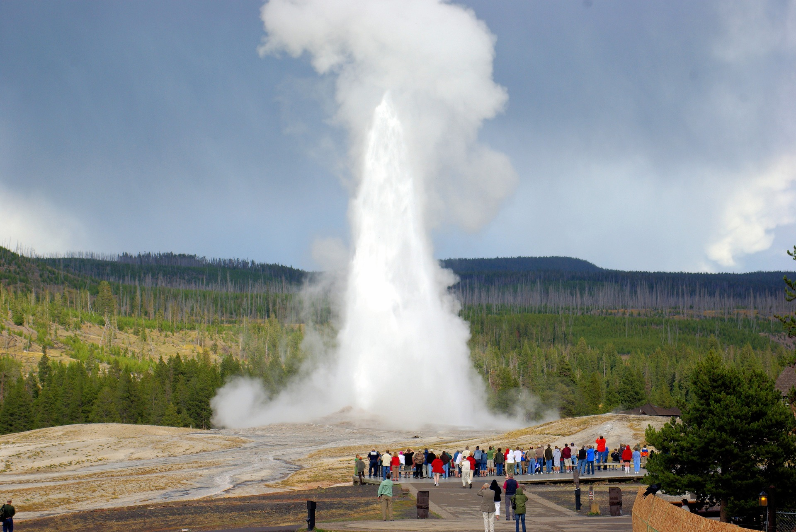

Click on Homepage for information on Old Faithful

Click on Machine Learning to see results of study
Linear Regression, KMeans clustering, Gaussian Mixture

Yellowstone National Park is located above a hotspot where the lithosphere rides over the mantle. Basalt generated magma is associated with hotspots, and under decompression and low pressure, low temperature material will begin to melt. Geysers are associated with hotspot and are formed when rain or melted snow percolates into the ground through cracks and fractures and interacts with the hot underlying rocks. The water reaches temperatures over 100 degrees Celsius, but because there is so much rock above the water, the water does not boil. Instead it becomes superheated and pressurized. Once enough pressure builds up, the superheated water will overcome the weight of the overlying rocks and burst out of the ground in an explosive manner.
Old Faithful in Yellowstone is one of the most famous geysers in the world, and erupts approximately every 80 minutes and can reach up to nearly 200 feet in height. However, in the past Yellowstone erupted much more frequently, on average about every 50 minutes. So what contributed to this change? Observing Old Faithful over several eruptions, one observes that when the eruption ("duration" in this stdy) is short (less than about two minutes in length), then the next eruption usually occurs more quickly (i.e., the "waiting time" is decreased). When the eruption is more powerful (up to five minutes long), it takes more time for the pressure to reach the critical level, and the waiting time increases significantly.